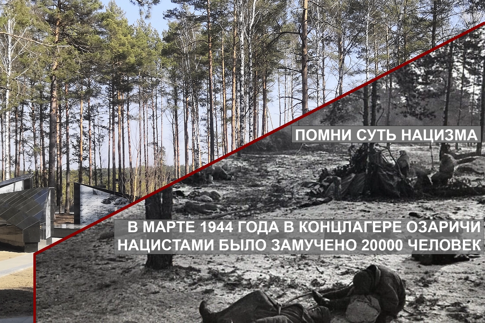
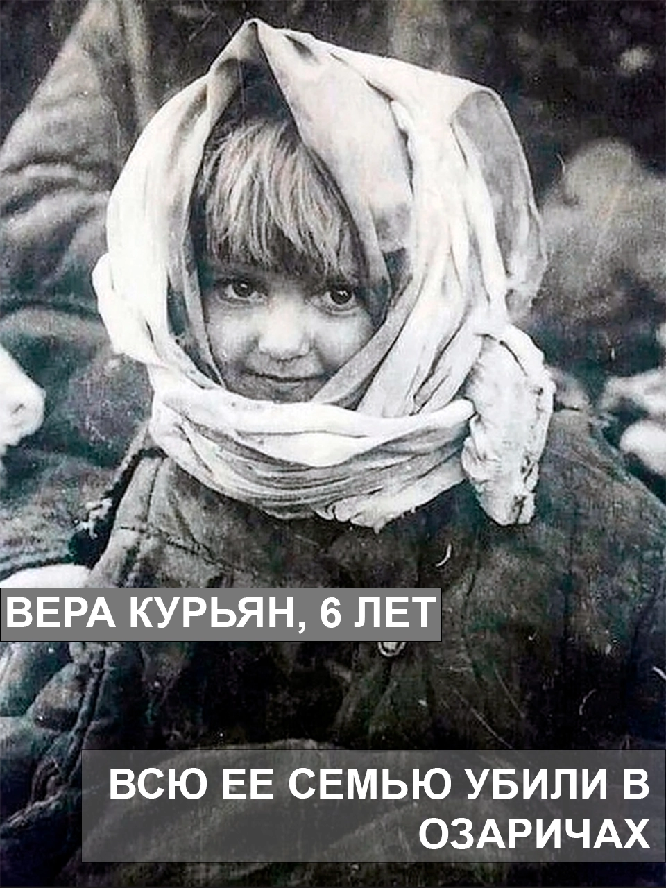
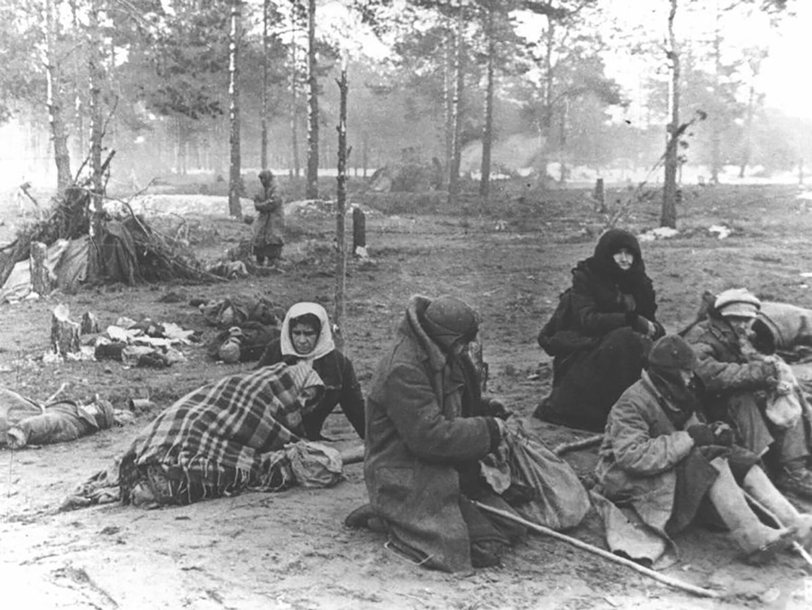
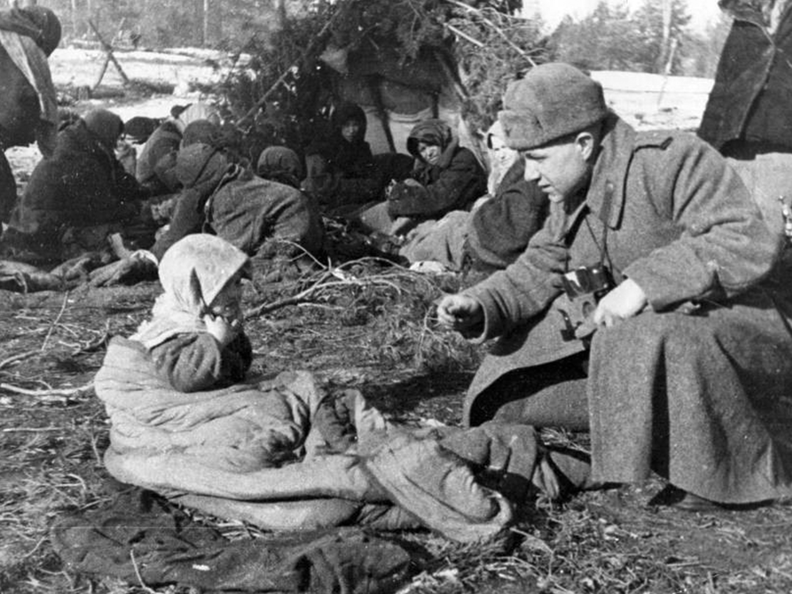
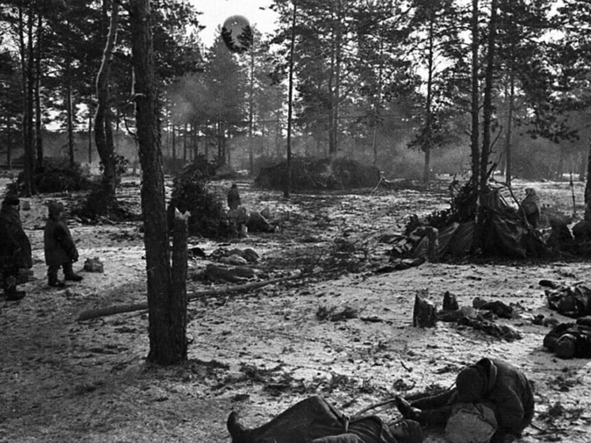
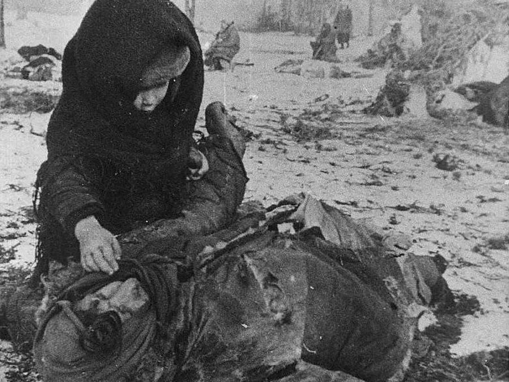
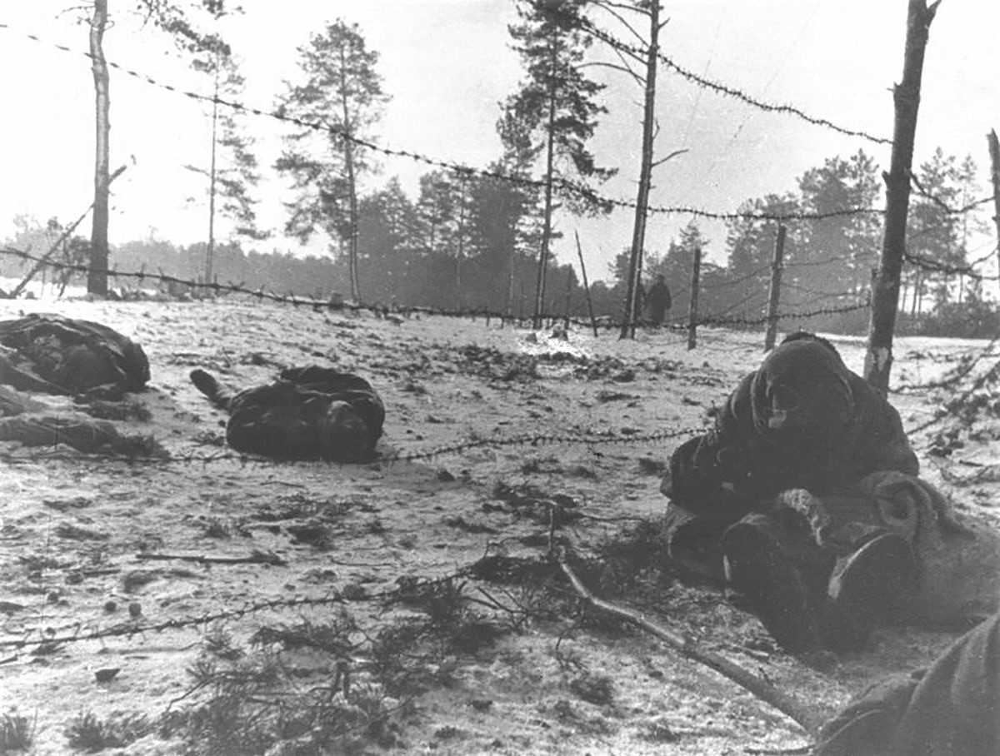
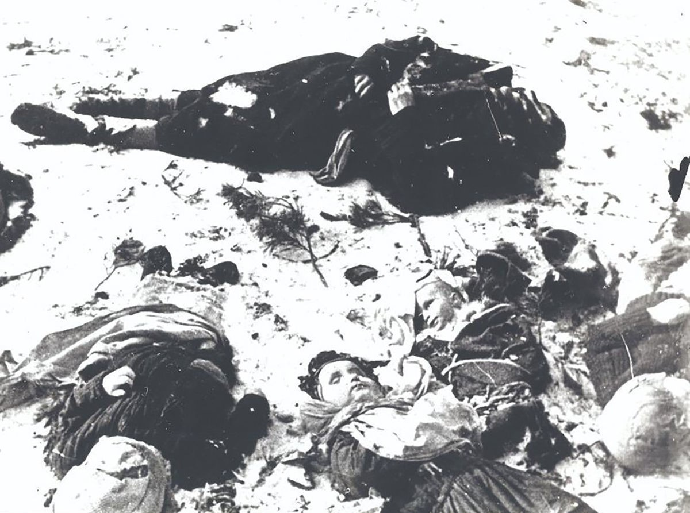

Трагедия в Озаричах — эпизод Великой Отечественной войны,
когда в марте 1944 года на территории Калинковичского района (Беларусь) нацисты создали лагерь смерти
«Озаричи» (просуществовавший официально 10 дней), куда согнали свыше 50 тысяч мирных жителей — женщин,
стариков и детей.
Их содержали под открытым небом на болоте, без пищи, воды и возможности развести костёр.
В лагере впервые массово применили бактериологическое оружие — сыпной тиф быстро распространялся среди узников,
а умерших запрещалось выносить за пределы территории.
В результате холода, голода и болезни погибли, по
разным данным, от 17 до 20 тысяч человек, а спасённых (в т.ч. свыше 15 тысяч детей) после освобождения
эвакуировали и лечили в военно‑полевых госпиталях по приказу генерала Рокоссовского.

К. К. Рокоссовский Члену Военного Совета фронта Телегину сказал:
Сделайте так, чтобы каждый солдат узнал об этих лагерях, выберите представителей от полков и пришлите их туда. Это будет лучше любой политбеседы.

Армейская газета 65–й армии «Сталинский удар»:
Тот не человек, кто это забудет! Это нельзя, невозможно забыть, как облик своей матери и нежное личико своей дочурки. Вы помните, товарищи солдаты и офицеры, наши рассказы о лагере смерти, из которого одна наша часть освободила 33 434 старика, женщины и детей?..

Член правительства Белоруссии Грекова, вернувшись из концлагеря, свидетельствовала:
Всех детей эвакуировали. Осталось около ста больных женщин. Вы не можете представить этого ужаса. На болоте колючая проволока. Кругом мины. Люди в бреду, с температурой сорок градусов на обледенелой земле…

Воспоминания Марии Алёхиной, узницы лагеря «Озаричи»:
На этом болоте ни одного кусочка хлеба не было. Бросали булки хлеба немцы через проволоку, люди ползали, хватали каждый себе.

В марте 1944 года на рубеже севернее Озаричей и далее в сторону Паричей на болотах разведчики 37-й гвардейской дивизии обнаружили три лагеря смерти, созданные гитлеровским командованием. Там томились и умирали тысячи советских граждан — преимущественно старики, женщины, дети. История этих лагерей — одно из самых гнусных злодеяний фашистских захватчиков, совершенных в годы войны на белорусской земле.

Тела женщин и детей умерших в лагере Озаричи.
Л. Н. Смирнов, помощник Главного обвинителя от СССР на Нюрнбергском процессе:
В этих лагерях не было крематориев и газовых камер. Но по справедливости они
должны быть отнесены к числу самых жестоких концентрационных лагерей, созданных фашизмом в осуществлении плана истребления народов.
×
Почтовые реквизиты
МАОУ ШКОЛА №79
450065, Республика Башкортостан, г. Уфа, ул. Борисоглебская, д. 16